Foundations of Robotics
Prof. Tapomayukh Bhattacharjee
September - December 2024
Grade: A+
Objectives
-
Part 1
- Robot Operating System (ROS)
- Publishers and Subscribers
- Running a car in simulation and visualizing the simulation with RViz Part 2
- Rotations and Homogenous Transformations
- Kinematics on Car Motion
- Deterministic Models
- Kinematics on 6 Degree of Freedom Arm with D-H Parameters Part 3
- State Estimation - Particle Filter
- Object Tracking
- Localization Part 4
- Planning
- A* and RRT Part 5
- Control
Part 5: Control
Part 4: Planning
A* and RRT planning algorithms will be implemented for a MuSHR car and WidowX 250 robotic arm.
Part 4.1 A* and Rapidly-exploring Random Trees (RRT)
First, the problem space was defined that included defining the x and y positions and collision-checking. The roadmaps tested were provided by the course.
A*The A* planning algorithm expands nodes in order of the f-value from f(n) = g(n) + h(n), the Euclidean distance is used to compute g(n), the estimated cost-to-come, and h(n), the estimated cost-to-go. After implementing the functions for the cost-to-come and cost-to-go distance computations, each neighboring point was checked to determine if it was expanded and the f-values were computed. From these f-values the desired path was implemented. The computed shortest path for A* can be seen below.
A* Computed Paths 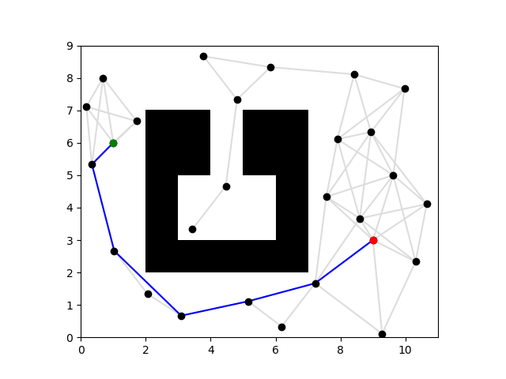 RRT
RRT
RRT planning was implemented next. The logic for RRT creates a map and finds a path to the goal. A shortened path version of the RRT algorithm wwas also implemented. The resulting RRT graphs are below.
RRT Computed Paths 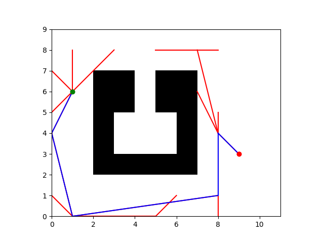 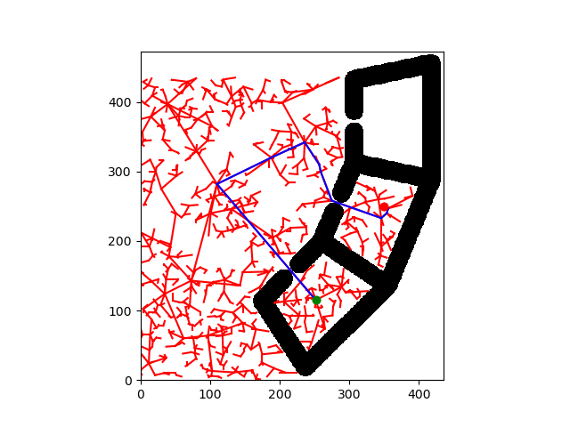 RRT Computed Shortened Path 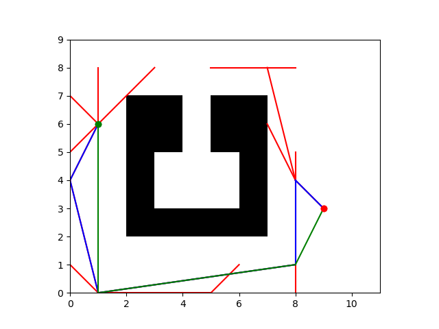 Tradeoffs and ComparisonThe two maps were created by myself. The first was created with the intention of A* running faster than RRT. The second was created for RRT to run faster than A*.
A* Faster Than RRT 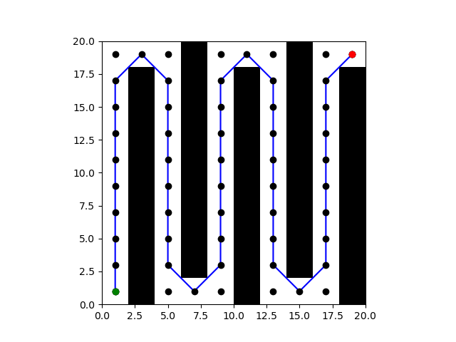 RRT Faster Than A* 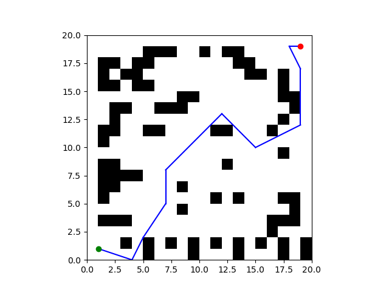A* often results in shorter paths compared to RRT and uses a heuristic function when searching. A* chooses nodes based on the estimated cost to the goal and uses an exhaustive search that can be computationally expensive in complex environments. RRT examines the the entire space of the map, often resulting in longer paths compared to A*, and randomly samples points. A* is better suited for simpler paths that are well-defined, such as in the astar_beats_rrt_map image. In the astar_beats_rrt_map, the shape of the obstacles results in the path to bounce between the walls of the obstacles that results in a longer path for RRT comparted to A* for that map. RRT is better suited for maps that include many obstacles, such as in the rrt_beats_astar_map image. (Source: Lectures on Canvas, "Graph-based Methods Slides.pdf" and "Sampling-based Methods.pdf")
Planning For MuSHR Car
The MuSHR car includes x and y position as well as orientation. The A* planning is adapted to include orientation by using Dubins path, connecting two configurations and using directed edges.
A* For MuSHR Car 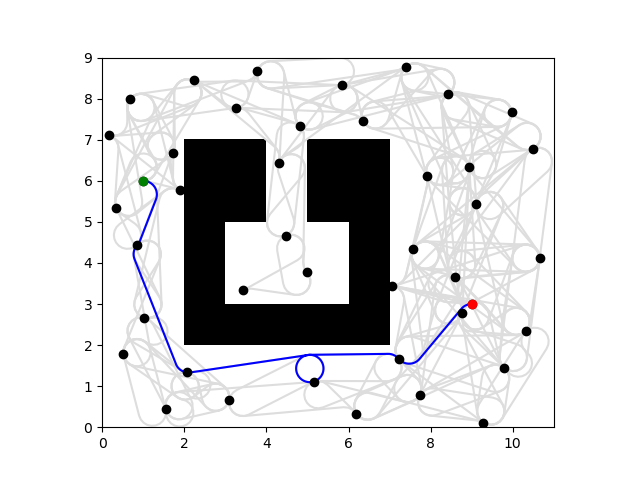Planning For WidowX 250 Arm
A*Implementing A* for the simulated WidowX 250 Arm involved interpreting the distance between two arm configurations as the change in the joint angles. The distance between two joint states is the sum of the absolute change in all joint angles. This is implemented as a heuristic function.
RRTImplementing RRT for the simulated WidowX 250 Arm involved writing a distance function that finds the path to the desired position that takes the least time to complete given velocity. Time moving from q1 to q2 is calculated by using: Time = max abs((q1[i] - q2[i])/v[i]) where [i = 1 to 6]. This is implemented in a heuristic function.
Part 3: State Estimation
A particle filter will be implemented for the MuSHR car and WidowX350 arm robot.
Part 3.1 Object Tracking for WidowX 250 Arm
Object tracking locates moving objects over time after initially detecting the location of the object. Tracking algorithms are robust to noise and occlusions when performing object detection. The experiment setup for this simulation uses an RGB image obtained from a camera placed above the robot arm. A top down view from the robot arm is captured. During the simulation a moving cylinder is tracked using the particle filter algorithm.
The particle filter records the possible states (positions of the cylinder) using particles and states, where each particle is a candidate state and each weight is the states probability. The cylinder's initial position depends on the initial pose estimate of the particle filter. The current position of the cylinder is detected using the estimated position from the previous timestep. The cylinder's tracked position is used to direct the end-effector of the arm. For the simulation I implemented the predict, update, and resample steps for the particle filter.
When implementing the predict step of the particle filter, I first added a noisy constant velocity model for the particles. The particle weights were updated by obtaining the observation. To find the likelihood of each particle, the distance of the farthest particle from the observation is subtracted by the distance of the considered particle from the observation. Implementing the resample step involved replacing all particles with a low or negligible weights. After running the simulation the untuned environment resembles the below image. Where the red dots are the particles, the blue circle is the observation of the detector, the green circle is the estimated position from the particle filter, and the robot arm is the black object.
Untuned Particle Filter for Robot Arm 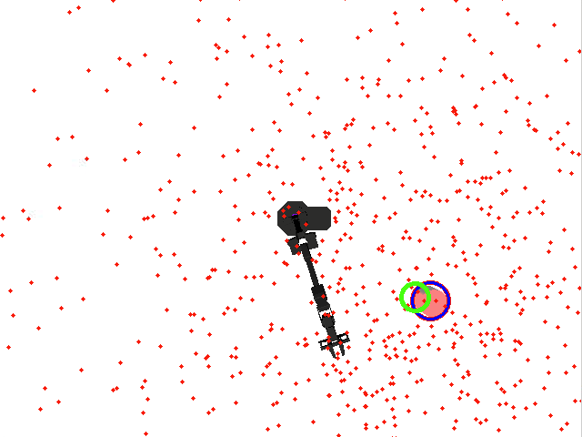After tuning the parameters, the particles are around the observation and the estimated position. The parameters were tuned to the following:
The process for tuning the parameters included initially testing the default parameters before changing anything. After testing the default parameters, I noticed that the blue and green circles moved quickly and there were not a lot of red particles on the screen. The particles I observed moved quickly across the screen. I then started to tune the parameters. First, I decreased the value of initial_cov to initial_cov = np.diag([10e1, 10e1]). I observed that this resulted in the green and blue circles moving around the screen quickly for a longer period of time, and there were more particles on the screen compared to the previous parameters. Then, I decreased the value of std_constant_vel to 50, then 10, then 5, and then 1. Each time I decreased the value of std_constant_vel the particles started closer together and near the middle of the green and blue circles. I then proceeded to test other parameters using the values of initial_cov = np.diag([10e1, 10e1]) and std_constant_vel = 1. I decreased num_particles from 1000 to 100, and observed that the number of particles on the screen decreased. I decided to keep this parameter the same for my final answer and changed num_particles to be 1000. I increased self.constant_vel from self.constant_vel = np.array([0,0]) to self.constant_vel = np.array([10,10]) and noticed that the particles and circles moved faster for the higher velocity values. I decided to keep this parameter at self.constant_vel = np.array([0,0]). Finally, I observed the effects of initial_mean running initial_mean = np.array([320, 320]).reshape((-1, 1)) resulted in the particles and circles starting in the lower half of the screen in the center. Running initial_mean = np.array(120, 120]).reshape((-1, 1)) resulted in the particles and circles starting in the middle of the upper left corner. I decided to keep this parameter at its default value of initial_mean = np.array([320, 320]).reshape((-1, 1)).
After understanding the effects of each parameter, I continued tuning std_constant_vel and initial_cov. I passed the test case when using std_constant_vel = 1 and initial_cov = np.diag([10e1, 10e1]). The mean position error was around 4.65 pixels. I wanted to reduce the position error further and decided to lower the parameter values to std_constant_vel = 0.5 and initial_cov = np.diag([5e1, 5e1]). This tuning resulted in a position error of around 4.46 pixels as my final result. The position error graph is below.
Position Error 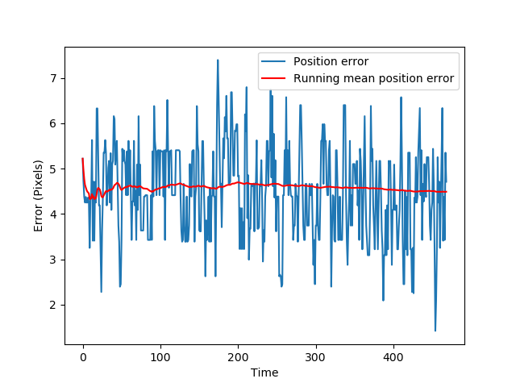Part 3.2 Localization for MuSHR Car
The particle filter implemented for localization on the MUsHR car uses the motion model and the sensor model. These models were implemented previously. For this task, the particle and the corresponding weights need to be initialized. The library rangelibc is used to cast rays into the map from the robot state and measures the distance to an obstacle.
First, the belief of the robot is initialized. Then, three publishers are created to collect information on the inferred pose, the particles, and odometry readings. In the simaultion, the car can drive forward, backward, and turn throughout the map. An image of the simulation is below.
Car Localization Simulation 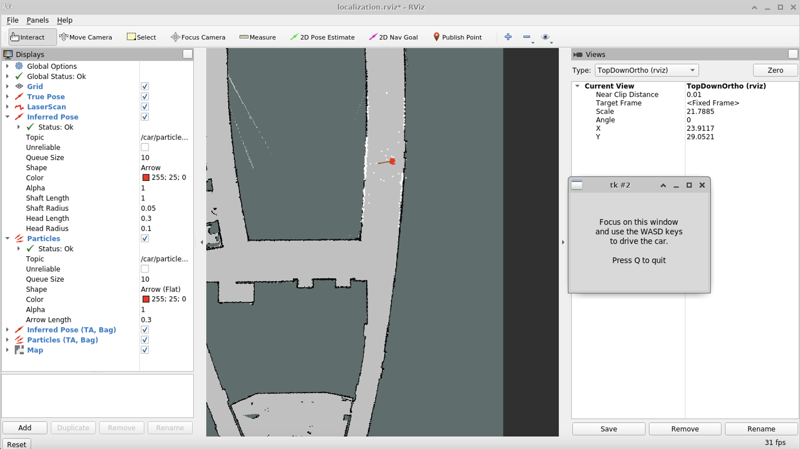Part 2: Kinematics
Part 2.1 Car Kinematics
The kinematics model of the MuSHR car created previously will be implemented in 2D. First, the derivation of the kinematics model is computed by hand by annotating the lengths and angles in the below figure.
Car Kinematics Model 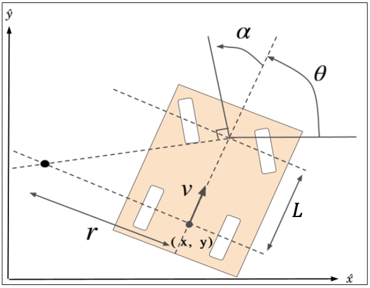 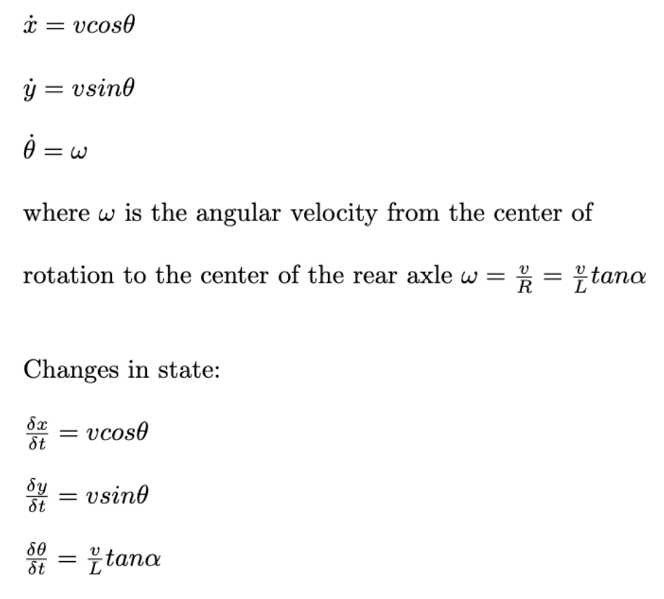 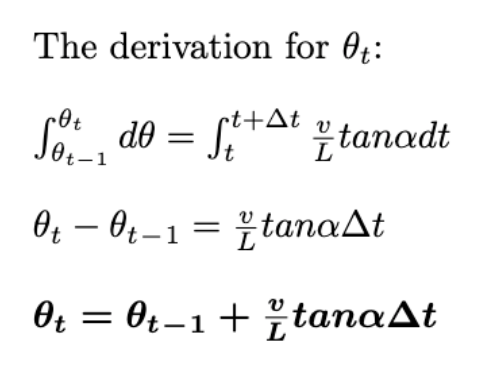 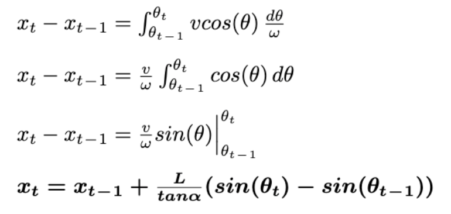 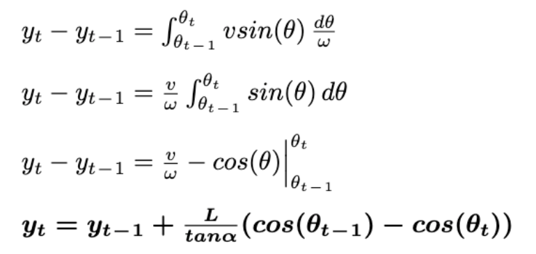These kinematic car equations were implemented in Python in a deterministic manner. An initial state and control is given and the equations are integrated to return a new state. This implementation is then expanded upon to create a deterministic motion model. A plot showing the car turning left, going straight, and turning right is below.
Deterministic Motion Model 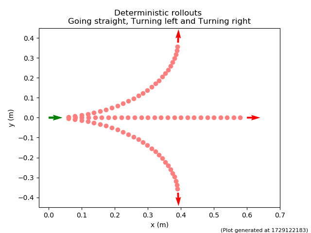Finally, noise is added to create a more robust model. The added noise is parametrized by action noise and model noise.
Part 2.2 Motion Model Parameters
To better understand how the noise parameters affect the simulation characteristics of the probabilistic motion model are plotted. The inital state is in green, the state from integrating the deterministic model is in red, and the particles are in blue. Multiple noise parameters were plotted until the desired plots were achieved.
When tuning the parameters for the plot, I initially set every parameter to zero and plotted the resulting graph. When all of the parameters are zero, the single red and single green arrows remain in the same position. The blue arrows for plot (1.0,0.34,0.1) are behind the red arrow, around (0.2,0) on the graph. The blue arrows for plot (3.0,0.4,0.5) are slightly above and to the left of the red arrow, around (0.7,1.1) on the graph. I then turned on parameter on at a time with a value of 0.5 to determine how each parameter affects the graph. Modifying vel_std resulted in the arrows being extended in a line in the direction that the arrow is pointed in. Modifying alpha_std resulted in the arrows forming a curve. Modifying x_std resulted in more arrows plotted in the direction of the x axis. Modifying y_std resulted in more arrows plotted in the direction of the y axis. Modifying theta_std resulted in the tail of the arrows being plotted at the same point and the head of the arrows being slightly apart from each other.
Plot 1: vel_std: 0, alpha_std: 0, x_std: 0.011, y_std: 0.011, theta_std: 0 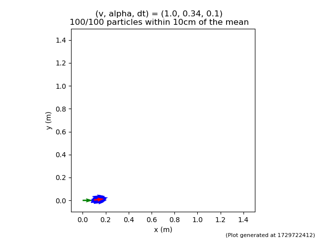 Plot 2: vel_std: 0.02, alpha_std: 0.098, x_std: 0.025, y_std: 0.005, theta_std: 0 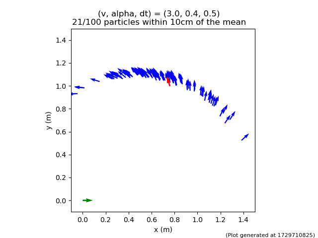Arm Kinematics
A 6 degree of freedom arm WidowX 250 was modeled as a spatial 6R open chain with six rotational joints. The figure below is a model of the six rotational joints.
WidowX250 and Model 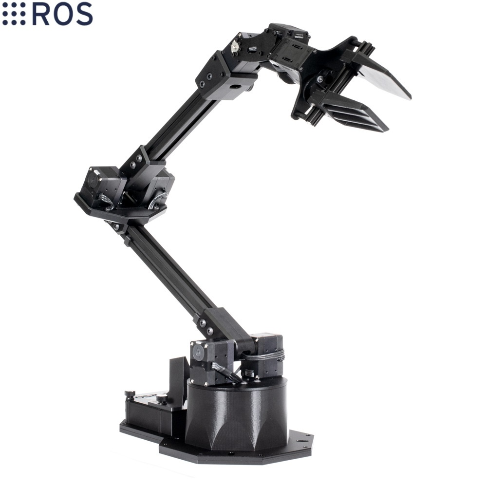 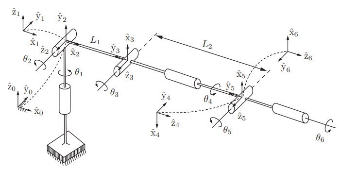The D-H parameters were found and are listed in the below table.
D-H Parameters 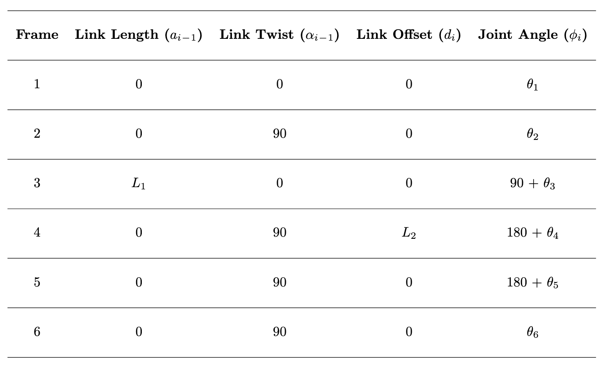Part 1: Running a MuSHR Car in Simulation and Visualizing the Simulator using RViz
The simulation is set up for a kinematic car model that includes noise by implementing and integrating equations to describe the ideal motion of a mechanical system. The simulator is run using an XML launch file that specifies which ROS nodes should start. The visualizer is shown below.
RViz Visualizer for MuSHR Car Simulation
There are several features implemented in RViz to help visualize the simulator. On the right side is a views panel that includes options for the "Target Frame" such as "base_link" for traking the car or "map" for not traking. The top of the visualizer includes features such as a 2D Pose Estimate that returns the numerical coordinates of the cars position. The left side shows the ROS topics that are accessed by RViz including the "Map", "Grid", and "RobotModel".
After setting up the simulation and visualizer, a subscriber was created to calculated a Manhattan Norm. The calculation was implemented in two different ways including Python for loops and using functions from NumPy. The run time for both implementations were compared over 100 runs and the mean and standard deviation were plotted in the below graph.
Comparison of Manhattan Norm Computations Over 100 Runs
The implementations shows that the execution time when using NumPy functions is faster than when using Python for loops. A subscriber was initialized to the car's pose topic. The x and y position of the car was extracted from the pose message and saved. The positions were ploted and the Manhattan Norm was computed for all xy-locations. Below are plots showing the path of the car along with the computed Manhattan Norms.
Car XY-Locations and Corresponding Manhattan Norms Run 1
 Run 2
Run 2

 Run 3
Run 3

 Run 4
Run 4